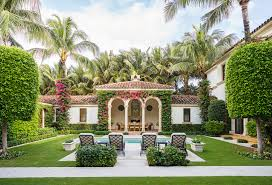

Life in the United States can be hectic—balancing work, family, and responsibilities often leaves little time for garden maintenance. But that doesn’t mean you can’t enjoy the beauty of greenery in your home. Low-maintenance plants are the perfect solution for Americans who want a lush environment without spending hours watering, pruning, or caring for delicate species.
Whether you're planning to start a garden outdoors or add some refreshing greenery inside your home, this list of **10 low-maintenance plants** will help you choose the right species for your lifestyle. If you’re new to gardening, you may also want to check: How to Start a Backyard Garden in the USA for a simple beginner guide.
Before choosing your plants, it's smart to understand your local climate so they thrive naturally. Not sure what grows best in your state? Visit: USA Hardiness Zones Explained.
The snake plant is well-known as one of the toughest houseplants you can own. It tolerates low light, irregular watering, and survives in almost any indoor environment. Perfect for apartments, offices, and bedrooms, the snake plant also improves indoor air quality by filtering toxins. Busy homeowners love it because it can go weeks without water.
Pothos is another extremely forgiving indoor plant that thrives in both shade and indirect sunlight. It grows long trailing vines, making it great for shelves and hanging baskets. Even if you forget to water it for several days, pothos keeps growing happily. Just trim the vines once in a while to maintain shape.
Aloe vera is not just low-maintenance—it is useful too! Its gel helps with burns and skin care. Aloe thrives on neglect and prefers bright sunlight and occasional watering. Outdoor gardeners in warm states like Arizona, Texas, and California love it because it survives heat extremely well.
If you want a fragrant plant that also keeps pests away, lavender is ideal. Once established, it requires minimal watering and thrives in sunny gardens. Its relaxing scent makes it perfect for entryways, backyard borders, or patio corners. Lavender also attracts bees, helping your garden’s overall health.
The ZZ plant is nearly impossible to kill. It loves low light, rarely needs water, and works beautifully in homes, offices, and even dark corners. It’s one of the best plants for people who travel frequently or forget to care for their plants.
Spider plants adapt to almost any condition and are known for producing baby spiderettes that can be replanted. They don't require constant attention and prefer moderate light. With their long green-and-white striped leaves, they add a refreshing look to any space.
Peace lilies are beautiful, elegant, and easy to care for. They survive even in low light and only need watering when their leaves start to droop. Peace lilies are great air purifiers and add a calm, peaceful vibe to bedrooms and living rooms. For beginners studying plant care basics, check out our guide: Best Indoor Plants.
Hostas are fantastic for outdoor gardens, especially in shady areas. They come in various sizes and leaf colors, and once planted, require very little maintenance. They return every year without replanting, making them ideal for busy homeowners who want long-lasting beauty.
Daylilies thrive in many US climates and are highly drought-tolerant. They produce stunning blooms and require almost no care once established. Plant them along borders or pathways, and they will reward you with fresh flowers every summer. Gardeners starting fresh will also find them easy to manage when building their first backyard garden.
Succulents—including jade, echeveria, and haworthia—are favorites among busy Americans because they require extremely minimal care. Just place them near sunlight and water occasionally. They come in hundreds of shapes and sizes, making them perfect for decorating desks, windowsills, and balconies.
Low-maintenance plants are perfect for anyone who wants beauty without the burden of constant care. Whether you're a busy professional, a student, a traveler, or someone who simply forgets to water regularly, these plants make gardening stress-free and enjoyable.
If you're ready to expand your plant collection or start your first garden, explore more helpful guides like: